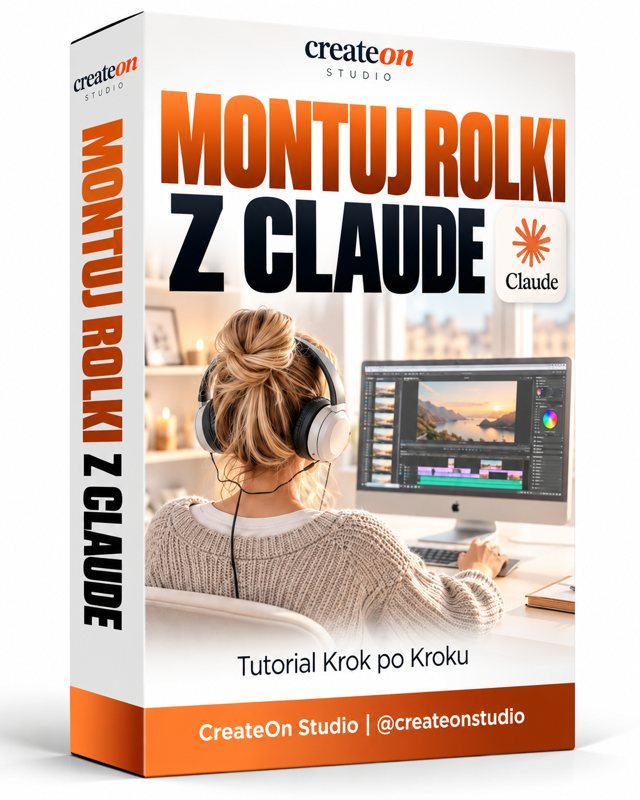

Montuj rolki z Claude
Przynosisz surowe nagranie, na którym mówisz do kamery. Claude buduje montaż w kodzie: napisy słowo po słowie, wyróżnione hasła, naklejki, wycięte zdjęcia produktów i wyrównany dźwięk. Podgląd oglądasz na żywo, a poprawki podajesz numerem klatki. Ten przewodnik opisuje instalację, sposób pracy i problemy, na które najczęściej się trafia.

- 01 ImportSurowy plik MP4 trafia do projektu
- 02 TranskrypcjaCzas każdego słowa (Whisper)
- 03 StylDopasowanie do rolki wzorcowej
- 04 PoprawkiUwagi z numerem klatki
- 05 DźwiękWyrównanie głośności ujęć
- 06 EksportMP4 1080×1920
Zanim zaczniesz
- Komputer z macOS, Windows 10/11 lub Linuksem i ok. 6 GB wolnego miejsca. Sam model rozpoznawania mowy zajmuje 1,5 GB, a każdy projekt rośnie do kilkuset MB.
- Claude Code, czyli tryb, w którym Claude może uruchamiać polecenia i edytować pliki na Twoim komputerze. Na macOS i Windows to zakładka Code w aplikacji Claude na komputer; tam Claude może też otworzyć podgląd na żywo obok czatu. Na Linuksie nie ma aplikacji na komputer, więc używasz Claude Code w terminalu albo w edytorze VS Code, a podgląd otwierasz we własnej przeglądarce.
- Surowe nagranie. Plik prosto z telefonu działa bez konwersji. Przewodnik zakłada format pionowy 9:16.
- Materiały marki: logo, zdjęcia lub okładki produktów, logotypy partnerów. Prawdziwe materiały najbardziej podnoszą jakość efektu.
Licencja: Remotion jest darmowy dla osób prywatnych i firm do 3 osób. Większe firmy potrzebują licencji firmowej z remotion.pro.
Instalacja (jednorazowo)
Każde polecenie możesz wkleić sam do terminala (na macOS: Terminal, na Windows: PowerShell) albo poprosić Claude, żeby je uruchomił. Claude zapyta o zgodę, zanim cokolwiek uruchomi. Pierwsze dwa kroki zależą od systemu, dalej wszystko jest takie samo.
- 00:30macOS
Zainstaluj narzędzia Apple i Homebrew
Pierwsza linijka instaluje narzędzia wiersza poleceń Apple (m.in. Git i kompilator, potrzebny do modelu rozpoznawania mowy). Druga instaluje Homebrew, menedżer programów na Maca. Pomiń to, co już masz: jeśli
git --versionibrew -vwyświetlają numery wersji.xcode-select --install /bin/bash -c "$(curl -fsSL https://raw.githubusercontent.com/Homebrew/install/HEAD/install.sh)"
- 00:35macOS
Zainstaluj Node.js i dodaj go do ścieżki
Remotion działa na Node. Pierwsze dwie linijki sprawiają, że Terminal (także ten, którego używa Claude) znajdzie Homebrew i Node, na każdym Macu: z procesorem Apple i Intel.
echo 'eval "$(/opt/homebrew/bin/brew shellenv 2>/dev/null || /usr/local/bin/brew shellenv)"' >> ~/.zprofile source ~/.zprofile brew install node
Otwórz nowe okno Terminala i sprawdź, czy
node -vwyświetla numer wersji. - 00:30Windows
Zainstaluj Git i Node.js
Otwórz PowerShell i zainstaluj oba programy wbudowanym menedżerem winget. Git jest potrzebny Claude Code i przy tworzeniu projektu, Node uruchamia Remotion. Możesz też pobrać instalatory ręcznie z git-scm.com i nodejs.org (wersja LTS).
winget install --id Git.Git -e winget install --id OpenJS.NodeJS.LTS -e
- 00:35Windows
Uruchom ponownie i sprawdź
Zamknij PowerShell i aplikację Claude, otwórz je ponownie, żeby zobaczyły nowe programy. Potem sprawdź, czy oba polecenia wyświetlają numery wersji.
node -v git --version
Jeśli PowerShell pisze, że „uruchamianie skryptów jest wyłączone” przy
npx, zezwól na lokalne skrypty dla swojego konta:Set-ExecutionPolicy -Scope CurrentUser RemoteSigned - 00:30Linux
Zainstaluj Git i narzędzia do kompilacji
Kompilator jest potrzebny do modelu rozpoznawania mowy. Przykład dla Ubuntu i Debiana; w innych dystrybucjach użyj ich menedżera pakietów.
sudo apt update sudo apt install -y git build-essential curl
- 00:35Linux
Zainstaluj Node.js w wersji LTS
Pakiet
nodejsz repozytorium dystrybucji bywa przestarzały. Zainstaluj aktualną wersję LTS według instrukcji na nodejs.org (Download → Linux) i sprawdź, czynode -vwyświetla wersję 20 lub nowszą. - 00:40
Załóż folder i otwórz go w Claude
Utwórz folder na rolki. W aplikacji Claude otwórz zakładkę Code i wybierz ten folder jako folder roboczy. Na Linuksie przejdź do folderu w terminalu i uruchom tam Claude Code.
Nazwa projektu bez spacji i polskich znaków, np.
rolka-01. Narzędzie tworzące projekt odrzuca nazwy typu „Moje Rolki”. - 00:45
Utwórz projekt Remotion
To tworzy pusty projekt i instaluje potrzebne pakiety.
npx create-video@latest --yes --blank --no-tailwind rolka-01 cd rolka-01 npm i
- 00:50
Dodaj umiejętności Remotion dla Claude
Umiejętności (skills) to pakiety instrukcji, które uczą Claude pracy z Remotion: napisów, obsługi plików wideo i eksportu. Uruchom to w folderze projektu.
npx skills add remotion-dev/skills
Trafiają do
.claude/skills/, a Claude korzysta z nich automatycznie, gdy pracuje w tym folderze. Jeśli w katalogu wtyczek Twojej organizacji w Claude jest wtyczka Remotion, możesz ją też włączyć, ale same umiejętności projektu wystarczą. - 00:55
Uruchom podgląd na żywo
Remotion Studio pokazuje film ze wszystkimi dodatkami, klatka po klatce.
npx remotion studio
Otwiera się pod adresem
http://localhost:3000. W zakładce Code (macOS, Windows) Claude może otworzyć go w swoim panelu przeglądarki obok czatu. W każdym systemie możesz też otworzyć ten adres we własnej przeglądarce.
Praca nad montażem
- 01:00
Przekaż nagranie i podaj język
Załącz plik albo wskaż, gdzie leży, i napisz, w jakim języku mówisz. Claude skopiuje go do
public/i ustawi długość oraz liczbę klatek na sekundę zgodnie z nagraniem.Zawsze podawaj język. Model rozpoznawania mowy tylko dla angielskiego, użyty na polskim nagraniu, potrafi przez pół minuty powtarzać w kółko to samo zdanie. Model wielojęzyczny radzi sobie od razu.
- 01:05
Transkrypcja z czasem każdego słowa
Claude instaluje lokalnie Whisper (
npx remotion add @remotion/install-whisper-cpp), raz pobiera model i zapisuje moment, w którym pada każde słowo. Na tych znacznikach opiera się wszystko dalej: napisy, wejścia naklejek, zbliżenia. - 01:10
Pokaż rolkę wzorcową przed pierwszą wersją
Wklej link do rolki, której styl Ci się podoba, a jeśli Claude nie może go otworzyć, prześlij plik rolki albo 2–3 zrzuty ekranu. Claude przenosi z niej układ: styl napisów, sposób wyróżniania haseł, częstotliwość wejść grafik. Pierwsza wersja zrobiona bez wzoru zwykle trafia obok; wersja oparta na wzorze jest od razu blisko końca.
- 01:15
Daj prawdziwe materiały zamiast wymyślonych
Logo, okładki produktów, logotypy partnerów, kadr do żartu. Ogólne ikonki i wymyślone przez Claude karty interfejsu najczęściej wylatują przy poprawkach. Zdjęcia na białym tle są w porządku: Claude może wyciąć tło, albo możesz od razu wysłać pliki PNG z przezroczystym tłem.
- 01:20
Oglądaj w Studio i podawaj numery klatek
Przewijaj film w Studio i odczytuj licznik klatek. Najlepiej działają krótkie uwagi, jedna zmiana na wiadomość:
520 – usuń ikonkę rakiety 1409 – przesuń kartę z licznikiem niżej, na środek, żeby nie zasłaniała twarzy 469 – na górze ma być napis z nazwą marki, a nie logo
Przy uwagach o położeniu pomaga zrzut ekranu. Przy 30 klatkach na sekundę: klatka = sekundy × 30, więc 0:18 to klatka 540.
Gotowe polecenia
Skopiuj, uzupełnij nawiasy, wyślij.
- Start
Rozpoczęcie
Oto moje surowe nagranie: [plik]. Mówię po [język], trwa [długość], format pionowy na Instagram Reels. To dla [marka], promuję [oferta]. Zrób transkrypcję z czasem każdego słowa modelem obsługującym [język] Pokaż mi kilka pierwszych zdań transkrypcji, żebym sprawdził(a), czy słowa są poprawne, i poczekaj na mój wzór, zanim zaczniesz cokolwiek projektować.
- Styl
Rolka wzorcowa
Dopasuj styl do tej rolki: [link, plik albo zrzuty ekranu]. Napisy słowo po słowie nad moją głową, najważniejsze hasła w kilku wyrazistych stylach, dymki z cytatami przy kluczowych zdaniach. Kolory marki: [kolory]. Nigdy nie zasłaniaj mi twarzy i trzymaj wszystko z dala od krawędzi kadru.
- Materiały
Materiały marki
Oto moje [logo / okładki produktów / logotypy partnerów]. Kiedy mówię [nazwy produktów], niech pasująca okładka wskakuje jako mała naklejka w okolicy mojej talii, po kolei, bez nachodzenia na siebie. Usuń im białe tło.
- Dźwięk
Kontrola dźwięku
Zmierz dźwięk: głośność, przesterowania, szum tła i różnice głośności między ujęciami. Potem wyrównaj ujęcia i ustaw całość na -14 LUFS pod Instagram, bez zmieniania oryginalnego pliku.
- Koniec
Eksport
Wyeksportuj gotowy film w pełnej jakości. Zanim napiszesz, że gotowe, sprawdź długość i liczbę klatek na sekundę w wyeksportowanym pliku.
Zasady projektowania
Zasady, które sprawdzają się przy każdej rolce z osobą mówiącą do kamery.
Góra i dół rolki leżą pod interfejsem Instagrama, a prawą krawędź zajmują przyciski polubień i udostępniania. Napisy idą tuż nad głowę. Naklejki, karty i zdjęcia produktów idą w dolną część środka, w okolice talii. Rozmiary stref są przybliżone.
Twarz jest nietykalna
Nic na nią nie nachodzi. Gdy osoba podchodzi blisko kamery, przesuń dymek niżej.
Z dala od krawędzi
Grafiki przy krawędzi kadru zasłania aplikacja albo oko je pomija.
Prawdziwe zamiast ogólnych
Ogólne emoji zwykle wylatują przy poprawkach. Prawdziwe okładki produktów i logotypy partnerów działają najlepiej.
Jedna rzecz naraz
Zostaw momenty bez żadnych dodatków. Przeładowana minuta czyta się gorzej niż spokojna.
Wykorzystaj puste kadry
Gdy osoba wychodzi z kadru, to dobry moment na zdjęcie na cały ekran.
Emoji wyglądają różnie
Każdy system rysuje emoji po swojemu. Eksportuj na tym komputerze, na którym oglądasz podgląd, albo zamiast emoji używaj naklejek-obrazków.
Pisownia marki
Na starcie podaj dokładną pisownię nazwy marki, łącznie z wielkimi literami.
Prawa do materiałów
Kadry z seriali lub cudze nagrania mogą skończyć się wyciszeniem albo oznaczeniem rolki. Lepiej używać własnych lub licencjonowanych zdjęć.
Dźwięk
Claude nie słyszy, ale potrafi mierzyć. Poproś o kontrolę dźwięku przed eksportem. Najczęstszy problem to nie szum, tylko różna głośność ujęć nagranych w różnych miejscach: kilka fragmentów bywa o 10–15 dB cichszych od reszty.
- Remotion potrafi tylko ściszać, nigdy powyżej 100%. Żeby podgłośnić ciche ujęcia, Claude przetwarza ścieżkę dźwiękową programem ffmpeg do nowego pliku i podmienia ją w projekcie. Oryginał zostaje nietknięty.
- Celuj w około −14 LUFS i szczyty poniżej −1 dB. To sprawdzony punkt wyjścia, a na koniec zawsze odsłuchaj rolkę na telefonie.
- Przesterowania w nagraniu nie da się naprawić po fakcie. Przy nagrywaniu nie ustawiaj mikrofonu za głośno.
- Dla brzmienia jak ze studia przepuść oryginał przez Adobe Podcast Enhance albo Auphonic i daj Claude gotowy plik.
Eksport
Dopóki nie wyeksportujesz, nie ma pliku wideo. Studio to tylko podgląd. Użyj przycisku Render w Studio (postęp widać w zakładce Jobs) albo tego polecenia w folderze projektu:
npx remotion render [nazwa-kompozycji] out/rolka.mp4
Zamiast [nazwa-kompozycji] wpisz nazwę widoczną w lewym panelu Studio albo po prostu poproś Claude o eksport. Plik pojawia się w folderze out/. Rolka 70-sekundowa renderuje się kilka minut i waży ok. 100 MB. Przed publikacją sprawdź jej długość.
Typowe problemy
„node: command not found” / „node nie jest rozpoznawany”
Node jest zainstalowany, ale terminal go nie widzi. Na macOS uruchom linijkę echo 'eval …' >> ~/.zprofile z kroku instalacji i otwórz nowy terminal. Na Windows zamknij i otwórz ponownie PowerShell oraz aplikację Claude.
Windows: „uruchamianie skryptów jest wyłączone w tym systemie”
PowerShell blokuje npx. Uruchom raz Set-ExecutionPolicy -Scope CurrentUser RemoteSigned i spróbuj ponownie.
Instalacja modelu rozpoznawania mowy kończy się błędem
Na macOS i Linuksie model jest kompilowany na Twoim komputerze. Upewnij się, że masz narzędzia z pierwszego kroku instalacji (xcode-select --install lub build-essential).
„Cannot create an app named …”
Nazwa folderu ma spacje lub znaki specjalne. Utwórz projekt w podfolderze o prostej nazwie.
Transkrypcja się powtarza albo nie ma sensu
Zły model językowy. Poproś Claude o ponowną transkrypcję modelem wielojęzycznym z wyraźnie ustawionym językiem.
Wyeksportowany film jest o połowę krótszy
Zmieniła się liczba klatek na sekundę (np. z 30 na 60), a długość została ta sama w klatkach, więc wszystko leci dwa razy szybciej, a koniec jest ucięty. Łatwo to przypadkiem przestawić w ustawieniach Studio. Poproś Claude o przywrócenie liczby klatek z oryginalnego nagrania, zwykle 30.
Błyski lub czarne klatki w podglądzie
Zwykle to kaprys podglądu przy dużych plikach z telefonu (np. HEVC z iPhone’a), a nie błąd w montażu. Wyeksportuj i sprawdź plik. Jeśli błyski są też w eksporcie, zanotuj numery klatek i wyślij je Claude.
Claude nie może odświeżyć podglądu
W jego panelu przeglądarki jest otwarte okienko, np. logowania. Zamknij je i poproś jeszcze raz.
Wycinanie tła zjada kawałek produktu
Białe opakowanie bywa zbyt podobne do białego tła. Poproś o ostrzejsze wycięcie albo wyślij pliki PNG z przezroczystym tłem.
Mapa projektu
Co tworzy Claude, żeby było wiadomo, gdzie szukać. Nazwy plików mogą się różnić między projektami; zapytaj Claude, gdzie co jest.
| Ścieżka | Co zawiera |
|---|---|
| public/ | Nagranie, logo, okładki i wyrównany dźwięk. Wszystko, czego używa montaż. |
| src/Composition.tsx | Rozmiar, liczba klatek na sekundę i długość filmu oraz kolejność warstw. |
| src/…/timeline.ts | Każdy dodatek z czasem wejścia i zejścia w sekundach. Tu trafia większość poprawek. |
| src/…/words.json | Transkrypcja z czasem każdego słowa. Tu poprawia się literówki w napisach. |
| scripts/ | Pomocnicze skrypty: transkrypcja, wycinanie tła, wyrównanie dźwięku. Do ponownego użycia. |
| out/ | Wyeksportowane filmy. |
Kolejna rolka: skopiuj gotowy folder projektu, podmień nagranie w public/ i poproś Claude o nową transkrypcję i nową oś czasu. Skrypty i styl przechodzą dalej.